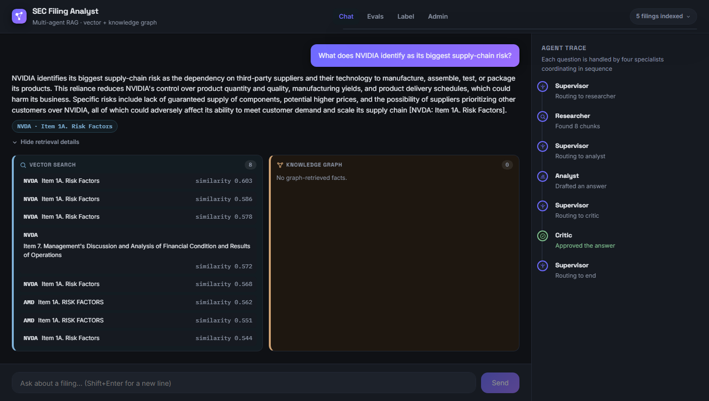
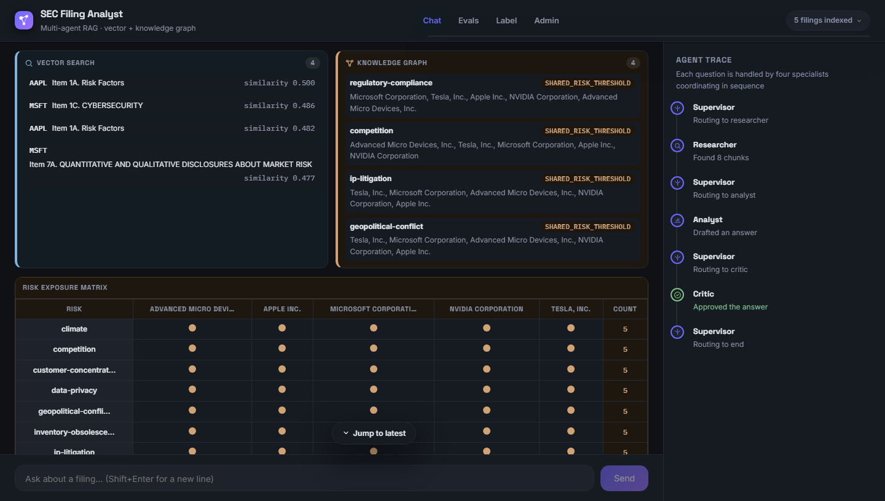
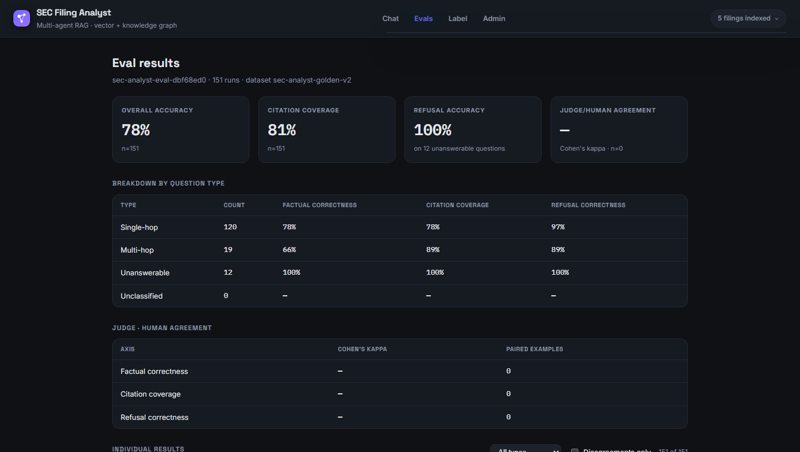
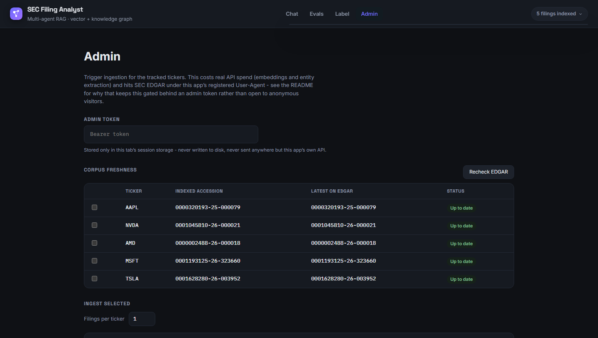
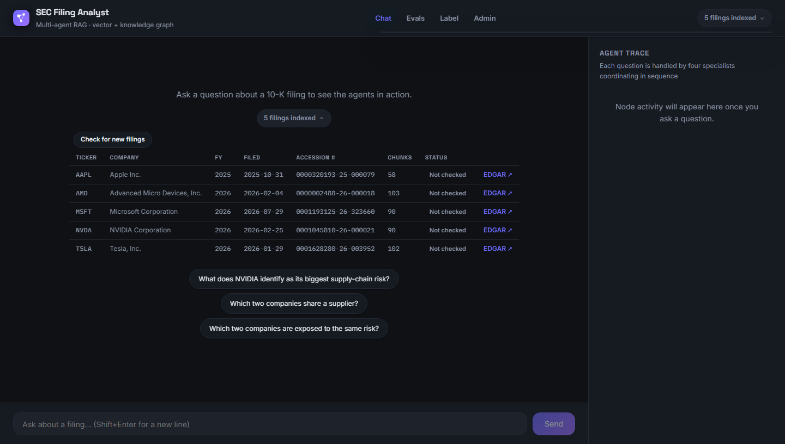

Réponses sourcées, trace en direct
Les réponses arrivent en streaming avec leurs citations, à côté d’une vue en direct de chaque étape des agents.
Étude de cas · Agents LLM + RAG
Posez des questions en langage courant sur les rapports annuels de cinq entreprises. Les réponses citent le rapport, y compris pour des faits qu’aucun rapport ne dit seul.

« Quelles deux entreprises partagent un fournisseur ? » Aucun rapport ne le dit seul.
La version 30 secondes
Posez des questions sur les rapports 10-K d’Apple, NVIDIA, AMD, Microsoft et Tesla, et chaque réponse cite sa source. La recherche vectorielle et un graphe de connaissances permettent de répondre à des questions entre entreprises, comme « quelles deux entreprises partagent un fournisseur ? ».
Le problème
Un 10-K fait plus de cent pages. Trouver un fait est facile ; trouver lesquelles de cinq entreprises citent le même fournisseur oblige à lire les cinq. Une simple recherche sémantique peut rater une entreprise qui le dit autrement.
Ce que j'ai construit

Les réponses arrivent en streaming avec leurs citations, à côté d’une vue en direct de chaque étape des agents.
Les faits du graphe sont dessinés en schéma, pour voir exactement pourquoi une réponse dit ce qu’elle dit.

Les risques sont classés dans 15 catégories fixes, donc « quels risques trois entreprises partagent-elles ? » devient un simple comptage.

Précision, couverture des citations et refus, détaillés par type de question.

Compare les rapports indexés avec SEC EDGAR et lance une ingestion protégée par jeton.

OpenAI d’abord, Anthropic en cas d’échec, et chaque appel est tracé.
Comment c'est construit
L’ingestion transforme les 10-K en extraits et en graphe. Quatre agents répondent à partir des deux et streament le résultat.
1. Lire les rapports
Téléchargement
Depuis SEC EDGAR
Analyse
Découpage en sections
Découpage
Extraits de 1 000 tokens
Embeddings
Dans pgvector
Extraction
Entités, puis validation
Chargement du graphe
Dans Neo4j
2. Répondre à une question
Next.js 16
Pages de chat, d'évaluation, d'annotation et d'admin.
FastAPI
Renvoie la réponse en streaming.
Agents LangGraph
pgvector
Recherche dans le texte.
Neo4j
Entreprises, fournisseurs, risques.
Passerelle LLM
Bascule et traçage.
Les parties difficiles
01
Les scores vectoriels et les résultats du graphe ne se classent pas ensemble. Le graphe a droit à une moitié fixe des résultats pour ne pas être écrasé.
02
L’extraction libre créait un nouveau nœud pour chaque formulation. Une liste de risques fixe et une validation stricte ont permis de relier les entreprises.
03
Le LLM choisit seulement une des quatre requêtes écrites à la main au lieu d'écrire la sienne, donc une saisie utilisateur ne peut rien injecter.
Comment j'ai travaillé
Ce que j'ai appris
La suite
Je cherche un CDI en ingénierie logicielle ou IA.